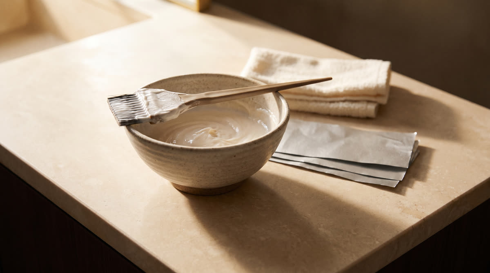
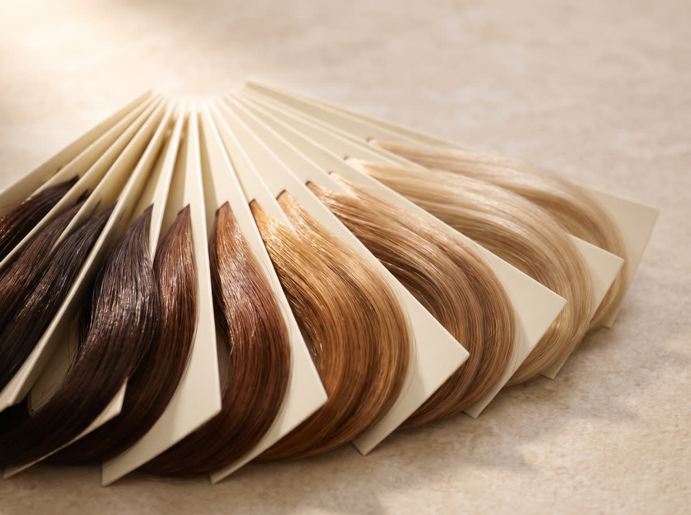

01
La lectura
Bajo luz natural miro tu nivel real, el fondo que va a aparecer y todo lo que ya vivió tu cabello. Sin esto, cualquier fórmula es una apuesta.
StyleYumy · Austin, TX
Yusmary Baños, colorista. Balayage, full blonde y corrección de color.
StyleYumy · Austin, TX
Balayage y colorimetría con Yusmary Baños. Luminoso, con dimensión, y crece sin línea.

La colorista
Trabajé años en cruceros, con mujeres de todo el mundo y de todo tipo de cabello, y con una sola oportunidad de hacerlo bien. Ahí entendí que el color no es la fórmula. Es la lectura.
Hoy trabajo aquí, en Austin, y hago lo mismo con cada cabeza que se sienta en mi silla. Miro tu nivel, tu fondo, lo que te hicieron antes. Después mezclo.
La escala de niveles
Debajo de tu color vive un pigmento que aparece cuando se aclara. Toca tu nivel y mira lo que hay debajo del tuyo.
4
Fondo que aparece Rojo anaranjado
Tu nivel es el punto de partida, no el techo. Hablemos de a dónde quieres llegar
Servicios
Luz pintada a mano, mechón por mechón, donde el sol te daría. Crece sin línea marcada.
Rubio completo, planeado por etapas si tu base lo pide. Nunca de golpe si eso significa quemarte el pelo.
Para quien no quiere dejar de ser morena. Dimensión y brillo, sin perder la profundidad.
Manchas, bandas, raíces calientes, puntas verdes. Lo que salió mal en otro lado tiene arreglo casi siempre. Mándame una foto con luz natural y te digo la verdad antes de que vengas.
Cobertura pareja de raíz a punta, con el tono elegido a partir de tu fondo y no de una foto.
Corte pensado para cómo cae tu cabello de verdad, no para cómo se ve el día del salón.
Largo y densidad que se sienten tuyos, con el color mezclado al tuyo antes de colocarlas.
Para bajar el frizz y devolver el brillo. Se planea junto al color, nunca contra el color.
Los precios dependen de tu largo, tu base y a dónde vamos. Te doy el número exacto en la consulta, antes de empezar, y no cambia después.
El proceso
01
Bajo luz natural miro tu nivel real, el fondo que va a aparecer y todo lo que ya vivió tu cabello. Sin esto, cualquier fórmula es una apuesta.

02
Te digo a dónde llegamos hoy y a dónde en la siguiente, si hacen falta dos. Con el precio y las horas por delante, no al final.
03
Pinto la luz a mano, mechón por mechón, donde el sol te daría. Después el tono, que es lo que decide si sales luminosa o naranja.
Transformaciones reales
El balayage fue simplemente maravillosa. Natural, luminoso y perfectamente integrado.
@evitacuba
Fue más que un cambio de look, fue un renacer. Refleja la mejor versión de mí misma.
@niuvis_espinosa_
Mi cabello quedó liso, suave y lleno de vida.
@Fordcontrerasleydi
Preguntas
El naranja no es mala suerte, es el pigmento que vive debajo de tu color. Cuando se levanta un castaño medio, lo que aparece debajo es rojo anaranjado. Si nadie lo neutraliza con el tono correcto, ese pigmento se queda. Por eso leo tu nivel y tu fondo antes de mezclar nada.
Aclarar siempre abre la fibra, y quien diga lo contrario miente. La diferencia está en cuánto se abre y con qué se protege. El balayage se pinta por zonas, no cubre toda la cabeza, y trabajo con protector de enlaces en cada aclarado. Si tu cabello no aguanta lo que quieres hoy, te lo digo y lo hacemos en dos veces.
Sí. La corrección de color es de lo que más hago. Manchas, bandas, raíces calientes, puntas verdes. Necesito verlo antes de darte un plan, porque cada caso arranca de un punto distinto. Mándame una foto con luz natural por WhatsApp y te digo la verdad.
Entre tres y cinco horas, según tu largo, tu base y a dónde queremos llegar. Prefiero decirte el rango real y no una hora bonita que después no se cumple.
Depende de dónde arrancas. De un castaño natural a un balayage luminoso, casi siempre sí. De un tinte negro de caja a rubio, no, y quien te diga que sí te va a quemar el pelo. En ese caso hacemos un plan por etapas y tú decides el ritmo.
Sí, español e inglés. Toda la consulta la hacemos en el idioma en el que te sientas cómoda.
Visítanos
Reserva directo en el calendario. Si primero quieres preguntar algo, escríbeme por WhatsApp y te contesto yo.